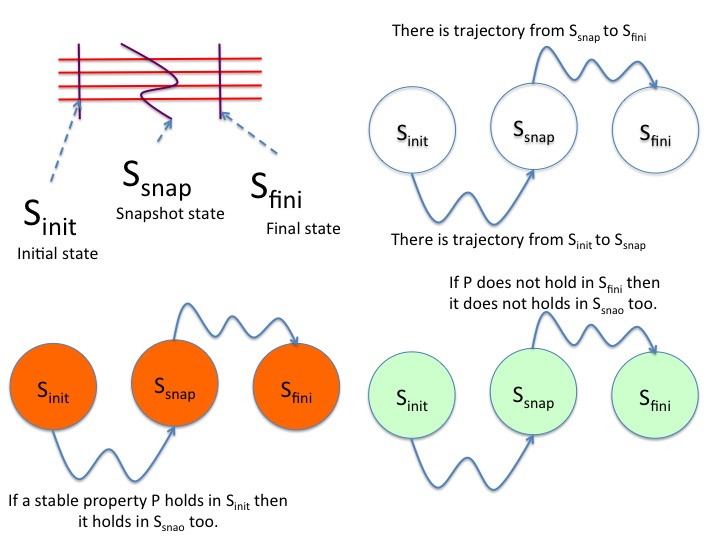
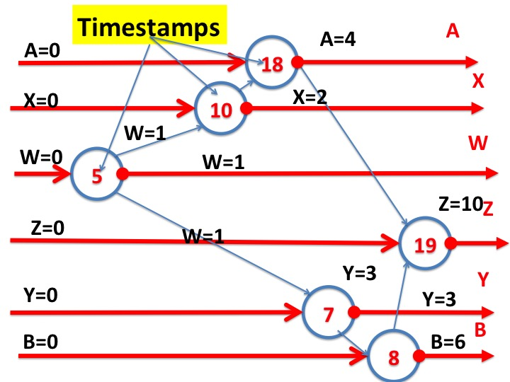
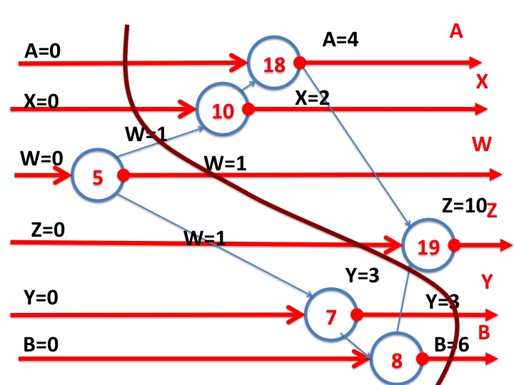
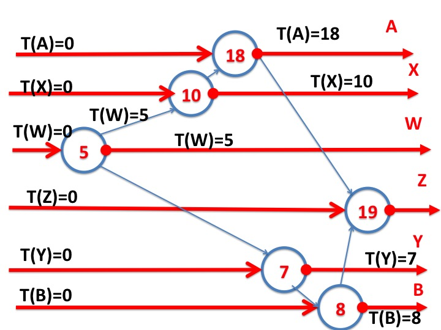

This module is a
continuation of the previous one.
This module introduces the concepts of snapshots; relates
snapshots to consistent cuts; shows how the idea of logical clocks can
be obtained from consistent cuts; and presents two algorithms for
taking global snapshots.
Theorem: Snapshot Visited in Trajectory
Let \(TD\) be the timeline diagram of a trajectory that starts in
state \(S_{init}\) and ends in state \(S_{fini}\). Let \(S_{snap}\) be
the state of a consistent cut of \(TD\). There exists a
trajectory which starts in \(S_{init}\), visits \(S_{snap}\), and then
visits \(S_{fini}\).
(\(S_{snap}\) stands for the snapshot of a state.)
Proof
The proof follows from the theorem on permuting events in a
trajectory. The intuition underlying the theorem is given by the
figure below.
Let \(TD\) be the timeline diagram of a trajectory and let \(C'\) be the permutation of \(C\) where the
order of events in \(C'\) is the same as in \(C\) except that events
in the consistent cut appear before events outside the cut.
From the theorem on permuting events, the graphs for the timeline
diagrams of \(C\) and \(C'\) are identical, and when they start at
the same state they end at the same state.
So \(C'\) starting in \(S_{init}\) also terminates in
\(S_{fini}\).
In trajectory \(C'\), events in the
consistent cut are visited before events that are not in the cut.
The state of the system after events in the
cut and before events that are not in the cut is \(S_{snap}\). Therefore
trajectory \(C'\) visits state \(S_{snap}\). And so, \(C'\) is an
instance of a trajectory that starts in \(S_{init}\), visits
\(S_{snap}\), and then visits \(S_{fini}\).
Illustration of the Theorem
The diagram on the top left of the figure illustrates the idea behind
the theorem. The diagram shows the timeline diagram of a trajectory
\(C\) and a consistent cut of the timeline. Treating the cut as a
string, and tautening the string to make it vertical and straight
gives us the timeline diagram for \(C'\), and it is clear that the
state of the cut is visited in between the start and end states.

Fig.1: Detecting Stable Properties
Detecting Stable Properties using
Snapshots
Theorem
Let \(P\) be a
stable predicate of a system,
i.e. if \(P\) holds at any point in a trajectory it continues to
hold forever thereafter in that trajectory. Let \(s_{init}\) and \(s_{fini}\) be the
states in which a global snapshot algorithm starts and finishes,
and let \(s_{snap}\) be the global snapshot obtained by the
algorithm. Then:
If \(P\) holds in \(s_{init}\) then \(P\) holds in \(s_{snap}\).
If \(\neg P\) holds in \(s_{fini}\) then \(\neg P\) holds in
\(s_{snap}\).
Proof
If \(P\) holds in \(s_{init}\) then it holds in all states reachable
from \(s_{init}\) including \(s_{snap}\).
If \(\neg P\) holds in \(s_{fini}\) then \(\neg P\) holds in all
states that can reach \(s_{fini}\) including \(s_{snap}\).
Illustration of the Theorem
The diagram on the top left of figure 1 illustrates states in
a snapshot. \(s_{start}\) is the state in which the snapshot algorithm
starts.
\(s_{fini}\) is the state in which the snapshot algorithm
ends.
The times at which the algorithms start and end are shown as vertical
lines.
\(s_{snap}\) is the state at a consistent cut; it is the snapshot state.
The diagram on the top right illustrates that there exists a path from
\(s_{start}\) to \(s_{snap}\) and then to \(s_{fini}\).
The diagram on the bottom left shows that if a stable property \(P\)
holds in \(s_{start}\) --- illustrated by the orange color of the
state --- then it holds in all states reachable from
\(s_{start}\). And so, \(P\) holds in \(s_{snap}\) and \(s_{fini}\). So,
these states are colored orange too.
The diagram on the bottom right shows that for a stable property
\(P\), if \(\neg P\)
holds in \(s_{fini}\) --- illustrated by the green color of the
state --- then \(\neg P\) holds in all states that can reach
\(s_{fini}\). And so, \(\neg P\) holds in \(s_{snap}\) and \(s_{init}\). So,
these states are colored green too.
Timestamps and Logical Clocks
A logical clock is an algorithm that gives timestamps to events
where the timestamps satisfy the following constraint.
Let \(T(e)\) be the
timestamp assigned to event \(e\). For every edge
\((e_{i}, e_{j})\) in the timeline diagram, \(T(e_{j}) > T(e_{i})\).
Examples of Event Timestamps
The following diagram shows a timeline diagram with timestamps for
events where the timestamps satisfy the above constraint.

Fig.2: Timestamps of Events
The Cut at a Timestamp \(t\)
The cut at a timestamp \(t\) is the set of events consisting of all
events with timestamps less than or equal to \(t\)
The following figure shows the cut at timestamp \(t = 9\).

Fig.3: Cut at Timestamps \(9\)
Theorem: Cut at Timestamp \(T\) is a Consistent Cut
If timestamps that satisfy the logical clock constraint are assigned
to events, then the cut at \(t\), for any \(t\), is a consistent cut.
Proof
All edges from vertices with timestamps greater than \(t\) are to
vertices with timestamps greater than \(t\).
Logical Clock: Assign
Timestamps to Events
Associate a timestamp with each variable at each point in the
trajectory. The logical clock algorithm uses the following rules:
The timestamp assigned to an event is any value greater
than the maximum of the timestamps of the variables referenced in the
event immediately before the event
The timestamp assigned to a variable referenced in an event immediately
after the event is the timestamp of the event.
The proof that these timestamps satisfy the logical clock rule ---
for every edge
\((e_{i}, e_{j})\) in the timeline diagram, \(T(e_{j}) > T(e_{i})\)
--- is straightforward.
Examples of a Logical Clock Algorithm
The figure below shows an example of the algorithm. Assume that the
timestamps of all variables are \(0\) initially. The first event from left
to right has an input variable \(W\) with timestamp \(0\); so, the
event sets its timestamp to any value greater than \(0\) --- in this
example it sets its value to \(5\), and that is the new timestamp
associated with \(W\). The next event has inputs \(W\) with timestamp
\(5\) and \(X\) with timestamp \(0\). This event sets its timestamp to
any value greater than \(0\) and \(5\). It sets its value to \(10\)
which is the new timestamp of this event's outputs.

Fig.4: Example of the Logical Clock Algorithm
A Global Snapshot Algorithm
The algorithm takes a "snapshot" of each variable, i.e., makes a
record of the
value of each variable. The record of the variable is called a
snapshot of the variable. A global snapshot is a tuple of snapshots of
each variable.
A Global Snapshot Algorithm Using Logical
Clocks
For any timestamp \(t\):
Record the value of each variable when the timestamp associated with
the variable's timeline is \(t\).
Because the cut at points at which the logical time is \(t\) is a
consistent cut, the corresponding state is a global snapshot.
Another Simple Global Snapshot Algorithm
Next let's look at an algorithm that does not use timestamps.
The algorithm begins by taking snapshots of one or more variables. The
mechanism to start snapshots is irrelevant. The algorithm executes the
following rule:
Before execution of an event, if a snapshot of any variable referenced in the event
has already been recorded, then take snapshots all unrecorded variables referenced in the event.
The algorithm terminates if and when all variables have snapshots.
Proof
From the algorithm, either all the variables referenced in an event are
recorded before execution of the event, or all are unrecorded before
execution of the event.
Consider a cut consisting of the set of events that reference
variables that are unrecorded before the event. This cut is a consistent
cut because all edges from events outside the cut (i.e. events in
which variables are recorded) are to
events outside the cut. Because this cut is consistent, the
state that is recorded is a snapshot.
Summary
This module described timeline diagrams, consistent cuts, logical clocks
and timestamps of events, and algorithms for determining global
snapshots. The concepts described here will be used to develop many
distributed algorithms.